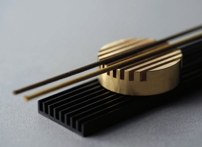
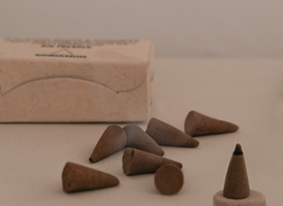
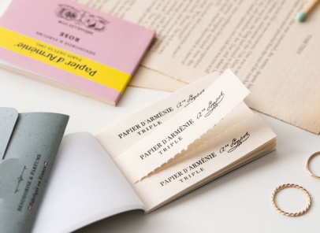
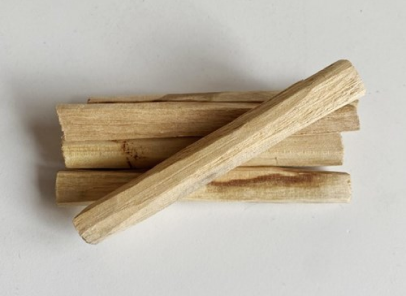

“스틱형”
일반적으로 많이 알고 계시는 향의 종류 중 기본형인 막대형 향
죽향은 대나무를 가늘게 잘라 가루 반죽을 묻힌 형태이며
인도식 인센스라 불리기도 합니다.
선향에 비해 향이 강한 편입니다.
선향은 반죽 자체로만 만든 제사향 스타일이며
한국, 일본 전통 방식의 인센스로 알려져 있습니다.

박스
“콘형 (뿔향)”
원뿔 또는 총알 모양으로 작게 빚어 만든 훈향의 종류
주로 향기를 목적으로 많이 사용하며 크게에 따라 다르지만
발향시간이 선향이나 죽향보다 짧고 향은 강한편 입니다.

박스
“페이퍼”
페이퍼 인센스는 내장된 종이를 한 장씩 뜯어 사용하도록 제작
탈취 효과가 뛰어나다는게 특징이며 스틱이나 콘 형태에 비해
향이 은은하고, 공간에 남는 잔향도 진하지 않아
인센스를 처음 접하는 이들에게 권할만 합니다.

박스
“스머지스틱”
말린 허브나 꽃을 다발로 묶은 형태의 인센스
다른 종류에 비해 가공하지 않은 자연의 향을
그대로 갖고 있다는 점이 매력적입니다.

박스